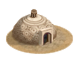
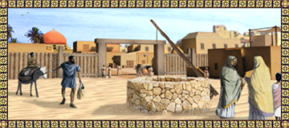
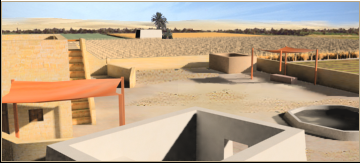
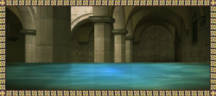

RTR: Imperium Surrectum
RTR: Imperium SurrectumQanat Irrigated Farming (crops)
3 levels, each replacing the one before it — you upgrade in place rather than building alongside.
Qanat Well (Crops) → Qanat Network (Crops) → Subterranean Aquaducts (Crops)
Levels at a glance
| Level | Cost | Build time | Minimum settlement | Upgrades to | Level | Cost | Build time | Minimum settlement | Upgrades to | ||
|---|---|---|---|---|---|---|---|---|---|---|---|
| Qanat Well (Crops) | 1,800 | 5 | town | Qanat Network (Crops) | Qanat Network (Crops) | 3,200 | 7 | large town | Subterranean Aquaducts (Crops) | ||
 | Subterranean Aquaducts (Crops) | 5,400 | 9 | city | — |
Costs in denarii, build time in turns.
Qanat Well (Crops)

A well and tunnel system that brings underground water to the surface.
A secret passed down from ancestors or whispered by distant strangers: the mountains overlooking our arid lands hold the key to a green paradise. Within them, ancient water swirls that can be tapped by digging a great well into the mountainside. By digging a downward channel through the mountainside, called a qanat or foggara, the water can be brought to the surface to make this land bloom as no one imagined. Though difficult to reach means costly to build and maintain.
Note: Some levels may have both positive and negative growth modifiers due to modding limitations. All effects apply.
Strategy
Qanat irrigated farming is more limited and expensive than rainfed or irrigated farming, but excellent for arid regions with aquifers. Besides higher base price, you pay significant upkeep as a tax penalty. In compensation, it offers reliable way to upgrade settlements to large town or minor city. Most factions get only 2 tiers; factions known to use qanats extensively get a third tier. It gains farming bonus (+1 = +80 income & +0.5 growth) with grain resource. Sulphur has same effect on tier 3. Offers trade bonus for cash crops (fruits, cotton, flax, hemp, dates), increased at tier 3. At tier 3, slave trade hub enables a tax bonus.
Availability
Only available in regions with Aquifer irrigation type, occurring in arid and semi-arid areas.
Limited to:
Tier 3: mountain valley, desert, plateau, steppe
Tier 2: mountains
| Cost | 1,800 denarii | Build time | 5 turns | Minimum settlement | town | Upgrades to | Qanat Network (Crops) |
Requirements — all of these must hold before this level can be built.
- the region does not have the hidden resource
nobuild(nobuilding) - Government Building
- no building tagged
foodis built or queued here (no_other_farm) - the region has the hidden resource
irrigation_aquifer
Show the condition as the game files write it
nobuilding and requires_gov and no_other_farm and hidden_resource irrigation_aquifer
What it does
- +2 farming level
- -3 taxable income (player only)
Show 5 effects that apply only in the circumstances shown
- +1 trade income — only when
resource fruits or resource cotton or resource flax or resource hemp or resource dates - -3 taxable income — only when
not is_player and building_present_min_level qanat_farming qanat_well - From tier 2 onwards this line will gain +1 farming due to resource: grain — only when
resource grain - From tier 3 onwards this line will gain +1 farming due to resource: sulphur — only when
sulphur_building_supply and not resource grain - Trade bonus due to resources: dates, fruits, cotton, flax, or hemp — only when
resource fruits or resource cotton or resource flax or resource hemp or resource dates
Qanat Network (Crops)

An interconnected network of underground canals for large-scale irrigation.
Having a single well is like having a single thread tying one to life. If civilization is to bloom in this desert, a whole network of mountain wells and qanat channels will do far better. By utilizing multiple hidden aquifers and interconnecting irrigation systems, a larger area can be brought under cultivation and freshwater supply ensured year-round. The effort of extending and maintaining this network has become the primary duty of every tribesman.
Note: Some levels may have both positive and negative growth modifiers due to modding limitations. All effects apply.
Strategy
Qanat irrigated farming is more limited and expensive than rainfed or irrigated farming, but excellent for arid regions with aquifers. Besides higher base price, you pay significant upkeep as a tax penalty. In compensation, it offers reliable way to upgrade settlements to large town or minor city. Most factions get only 2 tiers; factions known to use qanats extensively get a third tier. It gains farming bonus (+1 = +80 income & +0.5 growth) with grain resource. Sulphur has same effect on tier 3. Offers trade bonus for cash crops (fruits, cotton, flax, hemp, dates), increased at tier 3. At tier 3, slave trade hub enables a tax bonus.
Availability
Only available in regions with Aquifer irrigation type, occurring in arid and semi-arid areas.
Limited to:
Tier 3: mountain valley, desert, plateau, steppe
Tier 2: mountains
| Cost | 3,200 denarii | Build time | 7 turns | Minimum settlement | large town | Upgrades to | Subterranean Aquaducts (Crops) |
Requirements — all of these must hold before this level can be built.
- the region does not have the hidden resource
nobuild(nobuilding) - Government Building
- no building tagged
foodis built or queued here (no_other_farm) - the region has the hidden resource
irrigation_aquifer
Show the condition as the game files write it
nobuilding and requires_gov and no_other_farm and hidden_resource irrigation_aquifer
What it does
- -4 taxable income (player only)
Show 7 effects that apply only in the circumstances shown
- +3 farming level — only when
not resource grain - +4 farming level — only when
resource grain - +1 trade income — only when
resource fruits or resource cotton or resource flax or resource hemp or resource dates - -4 taxable income — only when
not is_player and building_present_min_level qanat_farming qanat_network - Additional +1 farming due to resource: grain — only when
resource grain - From tier 3 onwards this line will gain +1 farming due to resource: sulphur — only when
sulphur_building_supply and not resource grain - Trade bonus due to resources: dates, fruits, cotton, flax, or hemp — only when
resource fruits or resource cotton or resource flax or resource hemp or resource dates
Subterranean Aquaducts (Crops)

The pinnacle of qanat engineering, creating large, fertile oases.
Just as the mountains have sheltered this precious water from the sun since the world began, we have made sure it stays sheltered until it reaches the very plant it will water. By extending underground qanat channels far beyond the mountain slopes, we ensure water does not evaporate so we can irrigate an even larger area. These extensions required innovative solutions to maintain constant downward trajectory and suitable water pressure. With these efforts, lands that could not produce an ear of grain before have turned into a garden.
Note: Some levels may have both positive and negative growth modifiers due to modding limitations. All effects apply.
Strategy
Qanat irrigated farming is more limited and expensive than rainfed or irrigated farming, but excellent for arid regions with aquifers. Besides higher base price, you pay significant upkeep as a tax penalty. In compensation, it offers reliable way to upgrade settlements to large town or minor city. Most factions get only 2 tiers; factions known to use qanats extensively get a third tier. It gains farming bonus (+1 = +80 income & +0.5 growth) with grain resource. Sulphur has same effect on tier 3. Offers trade bonus for cash crops (fruits, cotton, flax, hemp, dates), increased at tier 3. At tier 3, slave trade hub enables a tax bonus.
Availability
Only available in regions with Aquifer irrigation type, occurring in arid and semi-arid areas.
Limited to:
Tier 3: mountain valley, desert, plateau, steppe
Tier 2: mountains
| Cost | 5,400 denarii | Build time | 9 turns | Minimum settlement | city |
Requirements — all of these must hold before this level can be built.
- the region does not have the hidden resource
nobuild(nobuilding) - Government Building
- no building tagged
foodis built or queued here (no_other_farm) - the region has the hidden resource
irrigation_aquifer - your faction is one of 24 factions, listed in the condition below (
faction_qanat_farming) - the region has the hidden resource
mountain_valley— or — the region has the hidden resourceplateau— or — the region has the hidden resourcedesert— or — the region has the hidden resourcesteppe— or — the region has the hidden resourcehills
Show the condition as the game files write it
nobuilding and requires_gov and no_other_farm and hidden_resource irrigation_aquifer and faction_qanat_farming and hidden_resource mountain_valley or hidden_resource plateau or hidden_resource desert or hidden_resource steppe or hidden_resource hills
What it does
- -1 population growth (player only)
- -5 taxable income (player only)
Show 9 effects that apply only in the circumstances shown
- +5 farming level — only when
not resource grain and not sulphur_building_supply - +6 farming level — only when
resource grain or sulphur_building_supply - -1 population growth — only when
not is_player and building_present_min_level qanat_farming expanded_qanats - +2 trade income — only when
resource fruits or resource cotton or resource flax or resource hemp or resource dates - -5 taxable income — only when
not is_player and building_present_min_level qanat_farming qanat_network - +5 taxable income — only when
slave_trade_building_supply - Additional +1 farming due to resources: grain, sulphur — only when
resource grain or sulphur_building_supply - Trade bonus due to resources: dates, fruits, cotton, flax, or hemp — only when
resource fruits or resource cotton or resource flax or resource hemp or resource dates - Tax bonus is due to local slave trade or factionwide supply — only when
slave_trade_building_supply
What the shorthands in those conditions stand for (6)
| Shorthand | Stands for | Shorthand | Stands for | Shorthand | Stands for | Shorthand | Stands for |
|---|---|---|---|---|---|---|---|
faction_qanat_farming | factions { cappadocia, nabataea, thamud, lihyan, gerrha, palmyra, ilici, carmo, hasmonean, osrhoene, musulamii, garamantes, nasamones, parni, atropatene, chorasmia, persis, saba, minaeans, qataban, himyar, hadhramaut, arshi, kucha, } | no_other_farm | no_building_tagged food queued | nobuilding | not hidden_resource nobuild | requires_gov | building_present governmentA or building_present governmentB or building_present governmentC or building_present governmentD or not is_player |
slave_trade_building_supply | resource slave_trade or hidden_resource slave_supply_built factionwide | sulphur_building_supply | hidden_resource sulphur_supply_built factionwide |